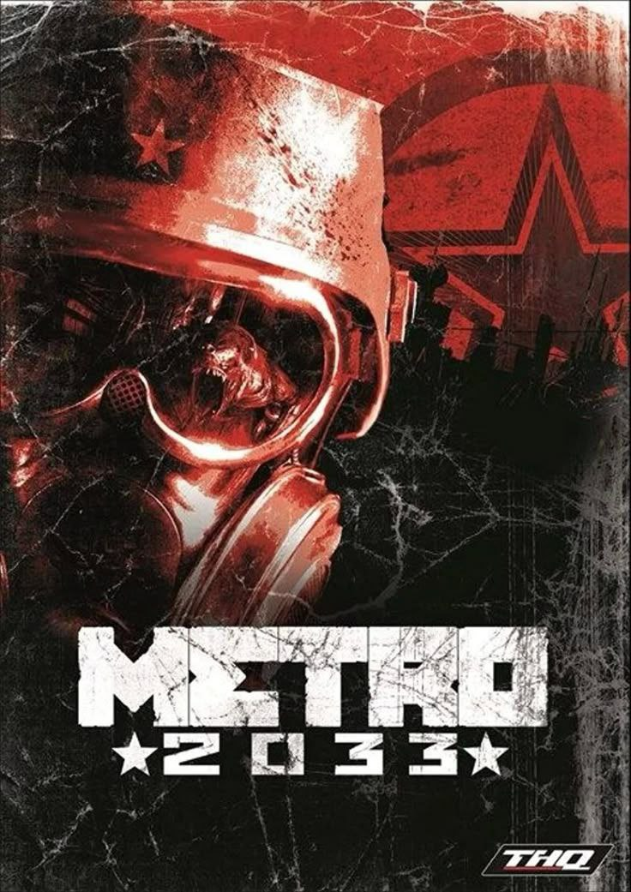
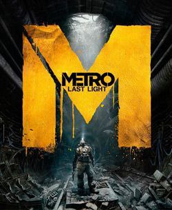
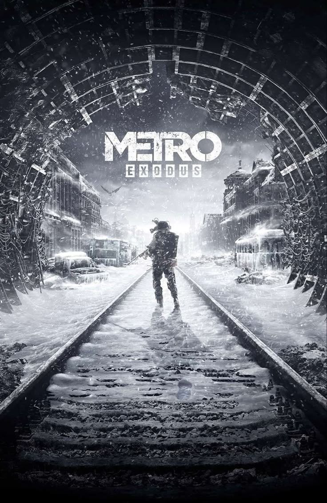

Pred čítaním si zapni hudbu pre lepšiu atmosféru
Zvuk metra, ticho temných tunelov a vzdialené kroky – to všetko vytvára pocit, akoby si sa naozaj nachádzal pod zničenou Moskvou. Spusti hudbu a ponor sa do sveta Metro.
Metro – svet po apokalypse
Herná séria Metro vznikla podľa románov Dmitrija Glukhovského a vtiahne ťa do temného, postapokalyptického sveta, kde sa ľudia po jadrovej vojne skrývajú v tuneloch moskovského metra. Hra spája silný príbeh, napätú atmosféru a realistický survival zážitok.
Metro 2033
V prvej časti série sledujeme mladého Arťoma, ktorý vyrastal v temných tuneloch metra. Svet po nukleárnej vojne je plný mutantov, nebezpečia a zúfalstva. Hra ponúka kombináciu stealth mechaník, akcie a silný príbeh o ľudskej nádeji.
Metro: Last Light
Pokračovanie prinieslo viac napätia, hlbší príbeh a lepšiu grafiku. Arťom sa musí vysporiadať s následkami svojich rozhodnutí a bojovať nielen o prežitie, ale aj o budúcnosť celého metra. Každé rozhodnutie ovplyvňuje koniec hry.
Metro Exodus
V tejto časti sa Arťom vydáva na povrch a opúšťa metro, aby našiel nový domov. Hra kombinuje otvorený svet so silným príbehom a nádherným prostredím Ruska. Každá kapitola prináša inú atmosféru — od zasnežených stepí po horúce púšte.
Moje dojmy
O sérii Metro som vedel už dávno, no rozhodol som sa ju prejsť len pred pár rokmi. Hneď po pár hodinách hrania som pochopil, že to nie je obyčajná strieľačka. Fascinovala ma grafika, atmosféra a hlboký príbeh, ktorý ma vtiahol do sveta po apokalypse.
Najviac ma oslovila prvá a posledná časť – Metro 2033 a Metro Exodus. Každá z nich má svoje čaro, ale koniec Exodus bol pre mňa niečo výnimočné – silný, emotívny a trochu smutný zároveň. Žiadna iná hra mi nedala toľko emócií ako táto séria.
Porovnanie častí série Metro
Každá časť hry Metro prináša iný zážitok. Tu je krátke porovnanie:
| Logo | Názov hry | Rok vydania | Prostredie | Hlavné prvky |
|---|---|---|---|---|
| Metro 2033 | 2010 | Podzemie Moskvy | Temná atmosféra, začiatok príbehu Arťoma | |
| Metro: Last Light | 2013 | Rozšírené tunely metra | Hlbší príbeh, morálne rozhodnutia | |
| Metro Exodus | 2019 | Povrch Ruska | Otvorený svet, silný emotívny koniec |